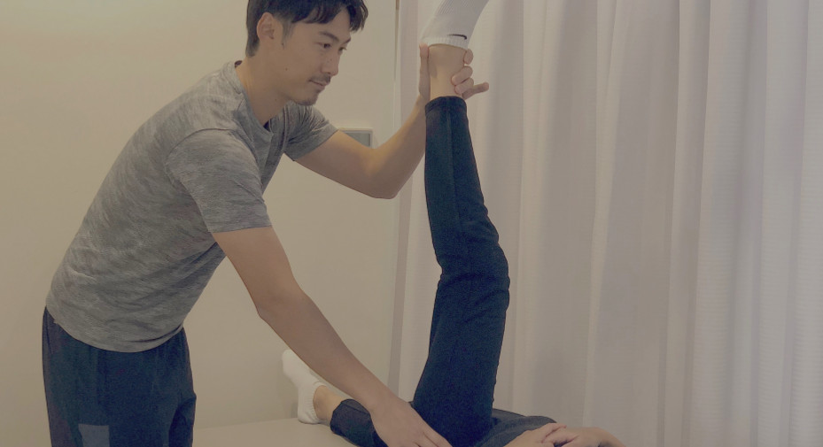

We will give personalized treatment to each and every patient.
のむら整骨院での治療は、基本的には手技を中心に行わせて頂いております。
その中で、手ではどうしても届かない深層の筋肉に対しては電気療法。
急性の外傷に対しては超音波療法。固定が必要な場合はテーピング療法。
のように、必要に応じて様々な治療方法を組み合わせて行っていきます。

筋膜リリース
頑固なコリや痛みの原因とされている筋膜を、手技療法によってリリース（解放）していきます。
「第２の骨格」と呼ばれる筋膜を整えることにより、身体が本来持っている正しい運動連鎖を導き、
痛みの根本解決へとつなげます。
ストレッチング
デスクワークやパソコン、スマホなどで同じ姿勢を長時間とっていると、 筋肉が硬く縮こまり、血行不良を引き起こし、最終的には鈍痛を引き起こします。 ストレッチングによって、縮こまった筋肉を伸ばし、血行と痛みの改善を目指しましょう。
骨格調整
解剖学や生理学、運動学に基づき、骨格を正しい位置に調整します。 普段のなにげない座り方や立方のクセからくる身体のゆがみを整え、バランスの良い身体にリセットしましょう。
テーピング療法
当院では、スポーツ外傷・障害のスペシャリストである、 日本体育協会公認アスレティックトレーナーによるテーピング療法が受けられます。 ケガからの早期回復、ケガの予防、パフォーマンスアップなど、様々な用途に応じて適切な処置を行います。
電気療法
当院では最新式の電気治療器を使用し、表層の筋肉から、手では届かない真相の筋肉まで幅広く治療することが可能です。 筋肉の痛みやコリ、神経痛などに高い効果を発揮します。
カッピング療法
数ある治療法の中で、体内から体外へ向けて刺激を与えられる唯一の治療法が、この「カッピング療法」です。 体内の老廃物を排出し、血液の循環を促す効果が期待できます。
超音波療法
超音波療法は超音波の機械的振動を照射する治療法です。 超音波の振動によって血流の改善・増大、疼痛の緩和、組織の伸展性の向上に効果が期待できます。 当院では超音波と電気治療を組み合わせたコンビネーション治療で、さらなる治療効果が期待できます。
交通事故治療
「むち打ち」に代表される、交通事故後の痛みやしびれに対する治療を行っています。 症状や体調などを詳しく聞き取り、一人一人の患者様に合わせた、丁寧な治療をさせて頂きます。